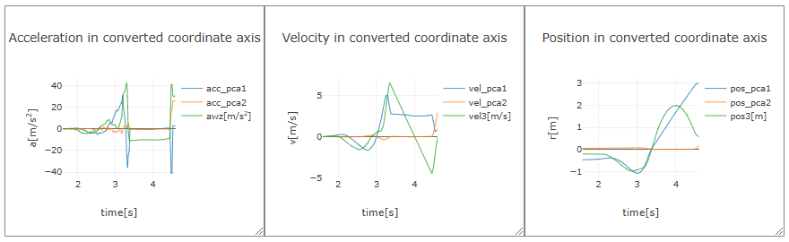

[ Operation Guide ]
■ Coordinate Conversion via Principal Component Analysis
Perform principal component analysis (PCA) on 2D or 3D data and convert the coordinate axes to align with the directions of the principal components, which are more suitable for analyzing the motion of the object. In PCA, the axis is aligned with the direction of greatest data variance (distribution), which becomes the first principal component axis. The second principal component axis is orthogonal to the first and aligns with the next greatest variance direction. Similarly, the third principal component, fourth principal component, and so on are determined.
As an example, for the projectile motion data shown below, perform PCA on the horizontal position data components (x and y components) of the object and convert the coordinate axes (x axis and y axis).

By clicking the “▶ Conversion of coordinate axes by principal component analysis” row at the bottom of this app, the PCA settings panel will appear. First, select the data (acceleration, velocity, or position) to be used for PCA, and then choose two or three components of the data. If only one component is selected (e.g., a single acceleration component), the motion is treated as one-dimensional, and "Conversion of coordinate axes by PCA" will not be displayed. Next, select the time range (start time and end time) for the data to be used in PCA. Here, PCA is performed on the data for the time range of projectile motion (t = 3.37 s to 4.455 s).
After configuring the settings, click the "Select" button. The PCA results will be displayed as shown in the figure, and a graph of the data transformed to the new coordinate axes will be plotted below it. The first principal component and second principal component are ordered by decreasing eigenvalues. The principal component loadings represent the unit vector components indicating the direction of the principal component axes in the original coordinate system. As shown in the graph of the converted coordinates, the value of the second principal component during the projectile motion is nearly zero, and the first principal component axis aligns with the horizontal direction of the projectile motion. In other words, when PCA is applied to position data of linear motion, the direction of the line becomes the direction of the first principal component.
By pressing the "Convert coordinate axes of output data" button below the graph of the converted coordinates, the acceleration, velocity, and position output data will be converted to the new coordinate system. The data in the new coordinate system will be obtained, and the graphs of acceleration, velocity, and position will be updated accordingly.
